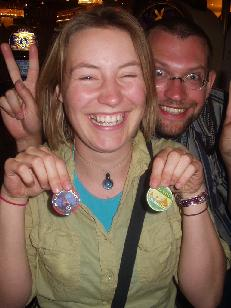

7 mile bridge
7 mile bridgeWe are starting out in Edmonton to see the Rockies, then on to Miami for a bit. After that, New Orleans, then on to New York where we will catch the Green Tortoise, a bus (and experience) that will take us to California in 14 days.
29 April: So, we're in Canada now, staying at Aunt Barbara's in Spruce Grove, near Edmonton. We had a great flight over, except for crazy dash across Chicago airport with seconds to spare to catch our connecting flight to Calgary, and another slight panic as Barbara and Bruce thought we were arriving later, so weren't at the airport to meet us! We've been to the Rockies, and had a snowball fight, and seen some local wildlife - elk and bighorn sheep (the bears were all hiding!).
Elk in the Rockies
Lake Louise, in the Rockies halfway between Banff and Jasper
Snowball fight in the Rockies, the day started out sunny!
Lovely Canadian farmstead, watching the sunset over the flat land with my cousins
We've been hanging out with Sam's cousins a bit - Michelle, Melanie and Simon, and I've now seen the world's biggest mall (West Edmonton Mall). It is so big it has a rollercoaster, ice rink, swimming pool and golf course inside it! We're off to Edmonton tomorrow with Michelle, then staying over with Melanie tomorrow night, then Miami on Monday.Sam writes: We've been staying with my Uncle in Naples (West Florida) for the past week, enjoying grapefruit picked fresh from the tree for breakfast, and generally just lounging around by the pool. The trip here from Miami was a two hour Greyhound ride along alligator alley - a long, straight road through the swampland, and we did see some alligators too!
Alligators run wild in these here parts
Naples is a lovely town, full of rich people and big houses. 5th avenue (the main street) has a peachy glow to it in the evening with lots of shops and places to eat. This road leads to the beach, a beautiful white sandy beach with a warm, clear ocean. It's off season now (on season is during the winter-it's too hot in summer!), so the beach is fairly quiet. I had my birthday on May 9th (also mother's day here), and found a coral snake in the garden. I managed to hold it for a photo opportunity before taking it away and releasing it in the wild (Helen wimped out).Snake we found, it can bite!
We're slowly getting used to the lizards in the bathroom-but suffering from mosquito bites a little (H: I'm suffering a lot). We've rented a car for the next 9 days and bought a cheap tent. We're going to the Everglades-alligator country, to the place of the legendary 'skunk-ape' and wild orchids. We plan to take an airboat across the swamp before driving to the Keys, then on to Miami beach. We went to a gallery of Clyde Butcher-who really captures the Everglades in black and white, Clyde ButcherWe're in Key West! That jutt of islands 80 miles out into the ocean, and man what a drive! The bridges were up to 7 miles long over beautiful blue sea, and people surfing kites below.
7 mile bridge
Key West is the southern most tip of the US, we're closer to Cuba than Miami!
It's a lovely town, and we've hired bikes to explore it.
Bike ride along the ocean
Key West is full of art galleries, people busking and street performances. They have a big party for every sunset (almost a shame because the sun actually sets behind another island). Accomodation is expensive, but we eventually found a cheap hostel ($23 per night) Key West Hostel. There are some good art galleries selling all kinds of art, and friendly people running them. David Kent deserves a mention Kent Gallery.
Stayed at the Creek Hostel in Miami Beach for $20 a night The Creek. It has a bar, pool and is within walking distance of the beach and the partying area. We did our usual tour of the galleries (a cheap thing to do). One gallery in particular was really cool, we were wandering around at 9pm Friday night, and this place looked like a head shop (psychedelic lights etc). Met a really nice guy called Howard who actually lived there and took us on a tour of Miami, and to a free street party in downtown Miami, with free food and drinks and a band playing. We then went on a tour of a posh hotel (the Biltmore) and a Venetian spa.
...In New Orleans right now, stayed in a new hostel called Jo and Flo's candlelite hostel. There is no Jo and no Flo! It's run by some guy who gets his kids to work there. One of his lads, an eighteen year old from New Orleans was asking me about my trip, "We're travelling the world", I said. He looked at me with amazement and said "What!!? All fifty states!!!!!!!????". We do laugh.
Mountain sprout playing Appalachian mountain music in the street
Trams, a fun way to explore New Orleans
What a fantastic and friendly city. Central park is cool, I've never seen someone practicing cello in a park before! The tube system is a little weird with express trains interspersed with the normal trains-one minute you think you're getting the local service to the next block and you suddenly shoot through to Harlem-lovely! They are fun though as you can run through between carriages whilst it's bombing through between stations.
Times Square
This is like Picadilly Circus on a larger scale. The locals are so friendly though, if you stop with a map you often get people asking you if you need help. Eating is cheap too, the Delis are fab, you can choose your food, they weigh it, and you can eat at a table or on the street, ded cheapo.
The statue of liberty tour takes in an amazing museum at Ellis Island. We spent hours there and that wasn't long enough-the stories of the immigrants are riveting, and this place was deserted from 1950 until 1980, including a hospital and bunk rooms-great place for a party.
Breakdancing on Union Square
Wow! Union Square! People chill and breakdance here, not for money, just to get together and have fun, it's just what I'd always fantasised about seeing back in my breakdance days (Sam of course) (H: what's breakdancing?). Anyway, check out the guy in the photo above, he's leaping over the others and doing a somersault at the same time, wow!
Green Tortoise Adventure Travel bus company
What a great way to travel! Get an old 1950's Greyhound bus, convert it so it has communal tables and beds, and drive across the States for two weeks with 30 others!
This is a map showing our route across the States on the Green Tortoise, with some of the fab places we visited on the way...
Taraaa! This is our trip mascot - we liberated him from a bar in New York, and he will be appearing in future photos - keep your eyes peeled! This is one of the many monuments in Washington D.C. - either Jefferson or the Capitol building, we can't remember which (sorry America!).
 Us and the Bus
Us and the Bus
A little peek inside - cosy!
Chelsea
Chelsea and Hudson got themselves covered in clay at Sea Rim, Texas - shame about the surrounding oil refineries
White Sands, Mew Mexico
White Sands is a desert of gypsum salts in New Mexico, covering a massive area - it's like another planet. We went sand surfing, then watched the sunset over the dunes - the whole landscape turned pink and tangerine, it was really beautiful.
Daniel, Horse riding with the Navajo at Canyon de Chelly - scary, uncontrollable horses!
We got up really early to see the sunrise at Bryce Canyon, but poor Jonathon was asleep again by breakfast time. The sunrise was worth getting up for though, as it kissed the rocks with orange and peach
Sunrise at Bryce Canyon
Lucy, singing in Zion National Park, Utah - just about the only thing you can do in Utah without being arrested.
Our bus drivers, Dave and Eric on top of Max, the bus
Everyone together
We doubled our money on the roulette table in Vegas (we started with $15 and made it to $30). See the glint of greed in Bjorn's eyes!
The croc at Golden Gate Bridge, San Francisco
Sam, hiking in Big Sur
After we left the Tortoise in San Francisco, we teamed up with Hudson and Clarissa and hired a car to drive south on the Pacific Coast Highway. Stopped at Santa Cruz, hiked in Big Sur, camped at Big Sur and San Simeon (brrrr, cold at night). We visited Hearst Castle, which was built by a rich guy in the 1920's and 30's and is a bizarre juxtaposition of antique European artwork over a concrete structure. Finished up in San Diego - went to Ocean Beach which is a cool place, but no sunshine for us, so it really was cool (eh?). Now we're in LA visiting Erica in America, who took us surfing on Venice Beach (thanks to Tracy Hastings for my swimming lessons). I nearly stood up, so I have wonderful bruised kneees now. Sam hired roller blades to skate along the beach. Today (24th June) we went hiking in Temescal Canyon, but the fog and smog obscured our views of the city. We also went to an amazing museum called the Museum of Jurassic Technology, which has an eclectic collection of exhibits, and a really spooky, sinister atmosphere - if you're in LA, visit it!